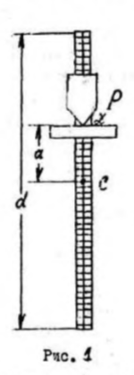

Лабораторная работа 1.8
Физический маятник.
Цель работы: Определение опытным путем ускорения свободного падения g с помощью физического маятника (маятника-стержня).
При малых углах отклонения, когда , дифференциальное
уравнение колебаний физического маятника, как известно, может быть
записано в виде
где - угол отклонения маятника от положения равновесия;
- угловое ускорение физического маятника;
- расстояние от центра инерции ( т.С ) маятника до оси
вращения;
m,
- соответственно, масса маятника и его момент инерции
относительно оси
вращения.
Из ( 1 ) следует, что физический маятник при малых углах отклонения от положения равновесия совершает гармонические колебания с периодом,равным:
Выражение ( 2 ) может быть переписано в виде
где L - приведенная длина физического маятника
В качестве физического маятника в работе используется маятник -стержень (рис.1). Если обозначить через - момент инерции стержня
относительно оси, проходящей через центр инерции С и параллельной
оси
, то
(Теорема Штейнера), где
- расстояние между осями. В нашем случае
и формулу ( 2 ) можно привести к виду:

В данной работе ускорение свободного падения определяется
по кривой зависимости периоде колебаний маятника-стержня от положения его точки подвеса.
Для наглядного графического изображения этой зависимости представим момент инерции в виде произведения массы тела m на
квадрат некоторой величины
исмеющей размерность длины и называемой радиусом инерции:
Это позволяет записать период колебаний маятника ( 4 ) в виде:
Анализ: имеет минимум при
может
быть найдена
, где d - длила стержня (Рис.1)
Откуда,
Видно, что равные периоды колебаний наблюдаются
при двух значениях : одно
точка M, другое при
точка N . Для указанных точек
, т.е . из (6) =>:

, т.к
, приведенная величина =>
Как видно из рис.2, приведенной длиной маятника является сумма длин
отрезков KМ и KN, и каждой секущей отвечает свое значение периода и своя приведенная длина
Вычисляем ,
,
, по формуле (7),
и из выражения (3) получаем:
Маятник - стержень схематически изображен на рис. 1.
По всей длине d маятника-стержня нанесены риски, около которых находятся отверстия для закрепления опорной призмы Р в определенном положении относительно центра инерции стержня. Расстояние между рисками постоянно, однако величина его зависит от выбора конкретного маятника. Маятник - стержень с помощью опорной призмы подвешивается на подставку, укрепленную на металлическом кронштейне (на рис.1 не показан).
Порядок выполнения работы.
Составьте таблицу для занесения результатов измерений по следующей форме:

Если на маятнике нет риски с указанием положения центра инерции стержня,определите это положение, поместив стержень на горизонтальную опору. Перемещая стержень относительно опоры, найдите его положение равновесия. В этом случае центр инерции маятника будет находиться на вертикальной прямой, проходящей через точку опоры. Отметьте точку опоры (центр инерции С). Укрепите на верхнем конца маятника опорную призму. При помощи опорной призмы подвесьте маятник на кронштейн и отклоните его от положения равновесия. Амплитуда
колебаний не должна превышать 4-5° . Измерьте с помощью линейки расстояние от точки опоры до центра инерции С стержня () и занесите значение величины (
) в табл. 1.
Пропустив 3 -4 колебания, запустите секундомер либо в момент прохождения маятником положения равновесия, либо в момент максимального отклонения маятника от положения равновесия и,отсчитав 20 полных колебаний, остановите секундомер. Результат измерения времени (двадцати колебаний) запишите в табл. 1.
Переместите опорную призму на одно деление вниз и повторите опыт
Согласно пункту 3. Перемещая таким образом призму последовательно
вплоть до последней риски выше т.С , получите столько серий измерений величин и
, сколько различных положений призмы допускает
данная конструкция мчятняка-стержня. Все результаты занести в табл. 1.
Проделав все измерения, по данным и
из табл. 1 постройте график
. Для определения масштабов на графике пределы изменения величины
определяются длиной стержня, а для определения пределов измерения Т оценивают период Т для наименьшего
значения
. Величины
и
нанесите на график.
Если окажется , что нанесенная точка отклоняется от плавного хода кривой за пределы доверительного интервала (определяется как систематическая инструментальная погрешность), измерение следует повторить.
Обработка результатов.

Для каждого сечения определите приведенную длину
и ускорение свободного падения
Полученные результатызанести в табл. 2.
Вычислите среднее значение для по формуле